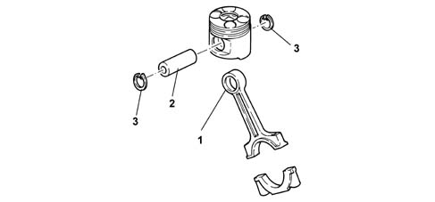
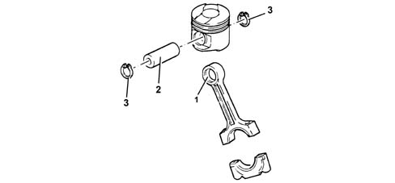
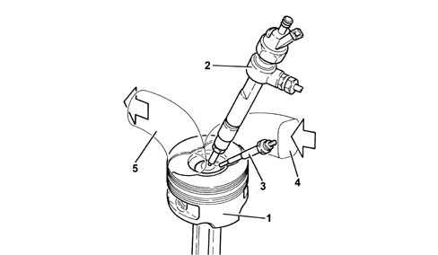
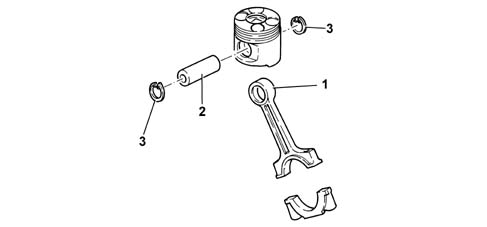
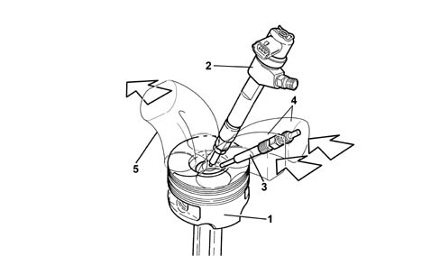

1028H PISTONS AND CONNECTING RODS
- Path
- Descriptions > 10 ENGINE > 1028 PISTONS AND CONNECTING RODS > 1028H PISTONS AND CONNECTING RODS
- Kind
- system description
- Applies to
- engines: 1.9 JTD 8v, 1.9 JTD 16v, 2.4 JTD 20v; all production periods
- Interactive page
- https://sloeber94.github.io/elrnDB-fCrm/en/#/194002373
Applies to: engines: 1.9 JTD 16v; all production periods
CONSTRUCTION SPECIFICATIONS
CONNECTING RODS
The connecting rods are in hardened and tempered steel with a copper bush (1) fitted for matching with the piston gudgeon pin (2).
The floating pins are held in place by two expansion rings (3) that are housed in grooves on the piston hubs.

PISTONS
The silicon light alloy pistons with autothermic inserts are subdivided into three size categories
An OMEGA-shaped combustion chamber in the piston crown improves combustion efficiency.
There is a channel inside the piston through which the oil, sent by the jet, flows, ensuring improved piston cooling.
The piston is coupled to the pin by means of two copper alloy bushes.

1 - Piston
2 - Injector
3 - Heater plugs
4 - Air inlet
5 - Exhaust gas outlet
Applies to: engines: 1.9 JTD 8v; all production periods
CONSTRUCTION SPECIFICATIONS
CONNECTING RODS
The connecting rods are in hardened and tempered steel with a copper bush (1) fitted for matching with the piston gudgeon pin (2).
The floating pins are held in place by two expansion rings (3) that are housed in grooves on the piston hubs.

PISTONS
The silicon light alloy pistons with autothermic inserts are subdivided into three size categories
An OMEGA-shaped combustion chamber in the piston crown improves combustion efficiency.
The piston is coupled to the pin by means of two copper alloy bushes.

1 - Piston
2 - Injector
3 - Heater plugs
4 - Air inlet
5 - Exhaust gas outlet
Applies to: engines: 2.4 JTD 20v; all production periods
CONNECTING RODS
Specifications
Type
The connecting rods are in hardened and tempered steel with a copper bush (1) fitted for matching with the piston gudgeon pin (2).
The floating pins are held in place by two expansion rings (3) that are housed in grooves on the piston hubs.

PISTONS
Specifications
Type
The silicon light alloy pistons with autothermic inserts are subdivided into three size categories
An OMEGA-shaped combustion chamber in the piston crown improves combustion efficiency.
There is a channel inside the piston through which the oil, sent by the jet, flows, ensuring improved piston cooling.
The piston is coupled to the pin by means of two copper alloy bushes.

- 1. Piston
- 2. Injector
- 3. Heater plugs
- 4. Air intake
- 5. Exhaust gas outlet